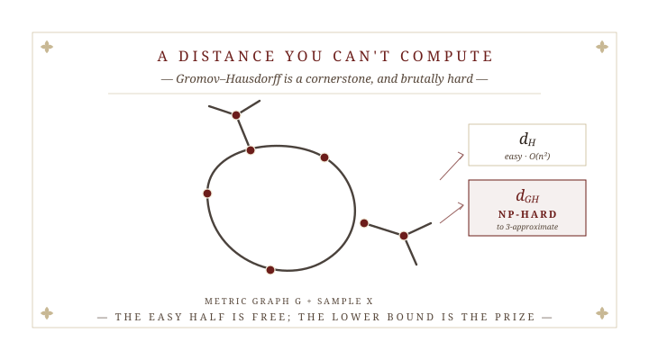
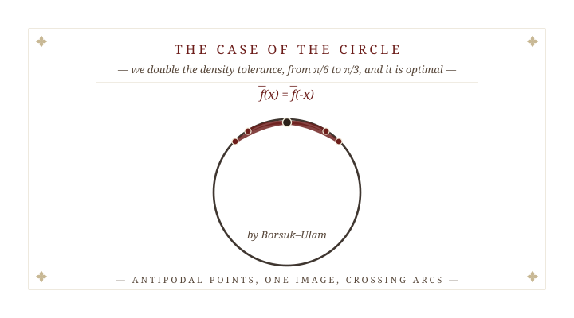
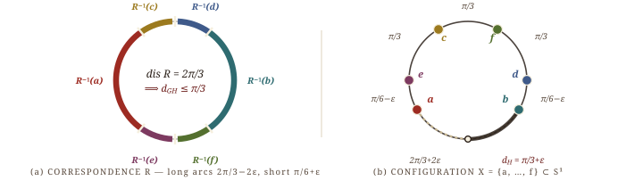
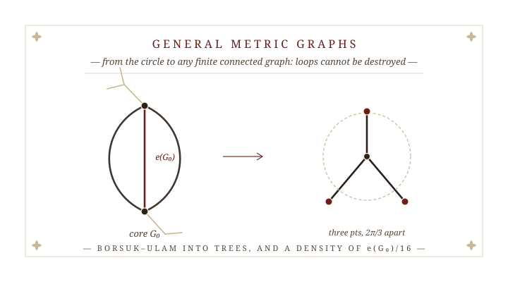
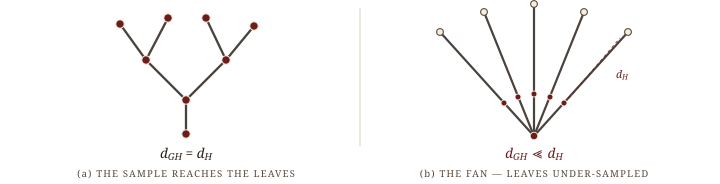

for a dense sample, the Gromov–Hausdorff distance equals the Hausdorff distance
June 2026

d_{\mathrm{H}} needs the sets to live in one space; d_{\mathrm{GH}} compares them up to isometry — no ambient space required.
For X, Y \subseteq Z, with d(x,Y) = \inf_{y \in Y} d(x,y) the distance to the nearest point, d_{\mathrm{H}}(X,Y) \;=\; \max\Big\{\, \sup_{x \in X} d(x,Y),\ \ \sup_{y \in Y} d(y,X) \,\Big\}.
For metric spaces (X, d_X) and (Y, d_Y), over correspondences R \subseteq X \times Y (matching every point of both), with distortion \operatorname{dis}(R) = \sup_{(x,y),(x',y') \in R} \big| d_X(x,x') - d_Y(y,y') \big|, d_{\mathrm{GH}}(X,Y) \;=\; \tfrac{1}{2}\,\inf_{R}\,\operatorname{dis}(R), \qquad =\,0 \;\text{ iff } X \cong Y.
Simple to define — and brutal to compute. ☞The wall
Hausdorff distance is cheap. Gromov–Hausdorff is NP-hard — even to approximate.
Tight factors live only in very special geometry. ☞So we sample
Replace a manifold M by a finite sample X \subseteq M; use the Hausdorff distance d_{\mathrm{H}} as a density gauge.
For X \subseteq M, C\, d_{\mathrm{H}}(M,X) \;\leq\; d_{\mathrm{GH}}(M,X) \;\leq\; d_{\mathrm{H}}(M,X). The upper bound is free; the lower bound is the prize — and C = 1 gives equality.
The question: can a dense sample capture the geometry exactly — can C = 1? ☞On the circle, first
C = 1 is the dream — a dense sample captures the geometry exactly: d_{\mathrm{GH}} = d_{\mathrm{H}}.
The circle — the simplest space with a loop — already reaches C = 1: d_{\mathrm{GH}}(S^1,X) < \tfrac{\pi}{6} \;\Rightarrow\; d_{\mathrm{GH}}(S^1,X) = d_{\mathrm{H}}(S^1,X). Adams, Frick, Majhi & McBride, 2025
Connectedness answers both. ☞The case of the circle

Let S^1 be the circle of circumference 2\pi. We sharpen the density threshold from \pi/6 to \pi/3.
For any subset X \subseteq S^1, d_{\mathrm{GH}}(S^1, X) \;\geq\; \min\!\left\{\, \textcolor{#6c1d1a}{d_{\mathrm{H}}}(S^1, X),\ \tfrac{\pi}{3} \,\right\}. In particular, the easy density gauge controls it: \textcolor{#6c1d1a}{d_{\mathrm{H}}}(S^1, X) < \tfrac{\pi}{3} \;\Rightarrow\; d_{\mathrm{GH}}(S^1, X) = \textcolor{#6c1d1a}{d_{\mathrm{H}}}(S^1, X).
One triangulation, one application of Borsuk–Ulam. ☞The proof in one picture
A low-distortion f \colon S^1 \to X becomes a continuous \bar f — then Borsuk–Ulam finishes.
The map — a small d_{\mathrm{GH}} gives f \colon S^1 \to X: its image is the sample, not all of S^1.
Triangulate — interpolate f along shortest paths: a continuous \bar f \colon S^1 \to S^1.
Miss an arc — if X is sparse, \bar f skips an arc, so it has degree zero.
Borsuk–Ulam — degree zero forces antipodal x, -x with \bar f(x) = \bar f(-x).
Arcs cross — neighbouring shortest paths cross: a far pair lands close — large distortion.
There is an explicit six-point configuration that defeats every constant past \pi/3.

For every \varepsilon \in (0, \tfrac{\pi}{6}) there is a nonempty compact X \subseteq S^1 with d_{\mathrm{H}}(S^1, X) = \tfrac{\pi}{3} + \varepsilon \quad\text{but}\quad d_{\mathrm{GH}}(S^1, X) = \tfrac{\pi}{3} \;<\; d_{\mathrm{H}}(S^1, X).
The two distances split exactly at \pi/3 — the constant can’t be raised. ☞Now, any graph

The simplest metric graph is a tree. There the two distances already coincide — provided the sample reaches the leaves.
Let T be a finite metric tree, X \subseteq T. If the largest gap avoids the leaves — d_{\mathrm{H}}(T,X) > \vec d_{\mathrm{H}}(\partial T, X) — then \; d_{\mathrm{GH}}(T,X) = d_{\mathrm{H}}(T,X).

Leaves tamed — now let the graph carry loops. ☞General graphs
The equality reaches any finite connected metric graph — under leaf control and a density set by the core — and it becomes a bound you can compute.
Let G be a finite connected metric graph, X \subseteq G. If \partial G \neq \varnothing, assume leaf control d_{\mathrm{H}}(G,X) > \vec d_{\mathrm{H}}(\partial G, X). If d_{\mathrm{GH}}(G,X) \;<\; \frac{e(G_0)}{16}, then \; d_{\mathrm{GH}}(G,X) = d_{\mathrm{H}}(G,X).
core G_0 — the loops, with the hanging trees pruned · e(G_0) — its shortest edge
For two dense samples X, Y \subseteq G, the triangle inequality turns the equality into a lower bound on d_{\mathrm{GH}}(X, Y) — phrased through d_{\mathrm{H}}(X, Y), which is \mathcal{O}(n^2)-computable. An otherwise NP-hard distance gains a quantitative, polynomial-time estimate.
Theory becomes algorithm — a concrete case is worked out in the paper. ☞What’s still open
Four questions for the bench — sharpness, generality, boundary, and beyond graphs.
The thread: connectedness, not homology, lower-bounds the distance. ☞Thank you
With thanks to Henry Adams, Fedor Manin, Žiga Virk, Nicolò Zava. SoCG 2026 · June 2026.
Gromov–Hausdorff in Metric Graphs · S. Majhi · SoCG 2026 · New Brunswick, NJ